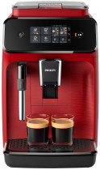
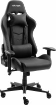
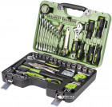
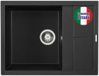
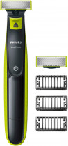
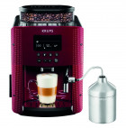
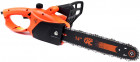
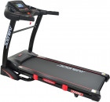
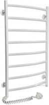

Каталог

Кофемашина PHILIPS Series 1200 EP1222/00
8999 ₴ 10 999 ₴
Полностью автоматическая эспрессо-кофемашина c классическим капучинатором
Кресло для геймеров Hator Sport Light
3999 ₴ 4 999 ₴
Кресло Sport Light поможет создать выразительный и современный облик вашего рабочего места. Тонкий баланс стиля и эргономики дополняется возможностью выбрать то цветовое решение, которое лучше всего впишется в ваш интерьер.
Универсальный набор инструмента Alloid 3/8"
1640 ₴ 2499 ₴
Инструмент Alloid – высокое качество материалов, эргономичный, яркий дизайн инструментов и упаковки. Инструмент Alloid выполнен с соблюдением самых высоких стандартов, что гарантирует высокую надежность. Отличный вариант в соотношении цена — качество. Alloid — качественный инструмент в средней ценовой политике.
Кухонная мойка ELLECI UNICO 125 NERO 40
3799 ₴ 4 999 ₴
Прямоугольная кухонная мойка серии Unico 125 от Elleci имеющая габаритные размеры 65 х 50 х 21 см, оснащается одной вместительной чашей с крылом, и поставляется с сифоном и переливным отверстием.
Триммер-Стайлер-Бритва Philips OneBlade
1499 ₴ 2 999 ₴
Это – не бритва Это OneBlade Революционное устройство, которое подравнивает, делает контуры и бреет щетину любой длины.
Кофемашина KRUPS Essential EA816570
13499 ₴ 16 999 ₴
Приготовьте кофе, совершенный в деталях, с кофемашиной KRUPS Essential. Насыщенный вкус и аромат, идеальная температура с первой до последней чашки. С кофемашиной KRUPS Essential EA816 каждая чашка кофе станет настоящим шедевром.
Цепная пила ТехАС ТА-03-119
950 ₴ 1 999 ₴
Электропила ТехАС ТА-03-119 предназначена для выполнения продольного и поперечного распиливания древесины. Для увеличения производительности устанавливается электромотор мощностью 1800 Вт и шина, длина которой составляет 350 мм. Данное соотношение мотора и шины обеспечивают лучшее усилие для вращения цепи. Распиливание древесины проходит равномерно, не перегружая мотор.
Беговая дорожка Jogway TJ35C
24999 ₴ 26 999 ₴
Кардиотренажеры Jogway производятся на высокотехнологичном Китае, который стремительно ворвался в двадцатку лидеров высокотехнологичные компаний и революционных новаторских решений, что позволяет производить товар с максимальной ценовой доступностью не поступаясь его качеством.
Полотенцесушитель LARIS Классик-R ЧФ8
1358 ₴ 1 999 ₴
Левосторонний электрический полотенцесушитель ЧФ8 500х800 серии Классик-R от украинской компании Laris. Материал: сталь с порошковой, глянцевой краской белого цвета RAL 9016 Напряжение питания: 220 В Частота тока: 50 Гц Температура поверхности изделия*: 50±5 °C Диаметр: стойка Ø25, толщина 1.5 мм; перемычка Ø 16, толщина 1.5 мм Регулятор: на вилке